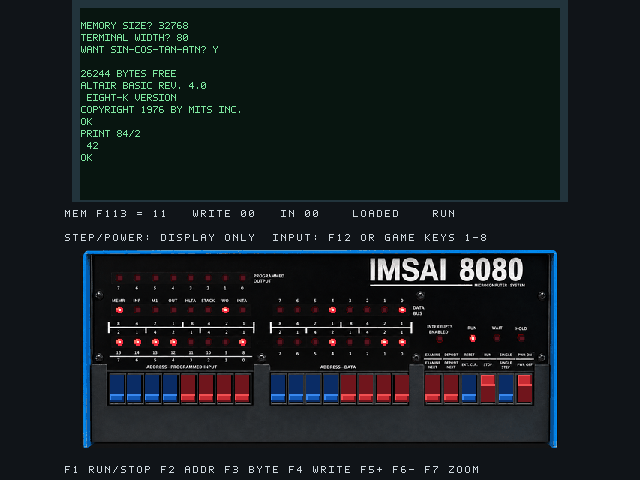
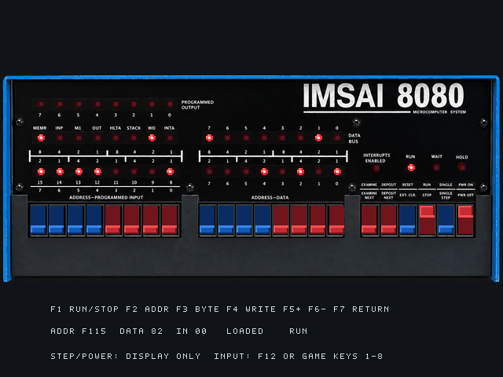
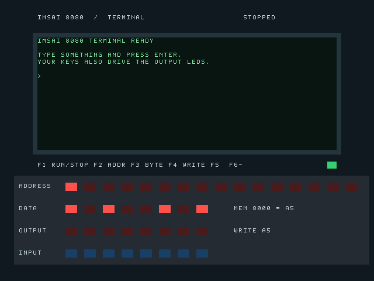
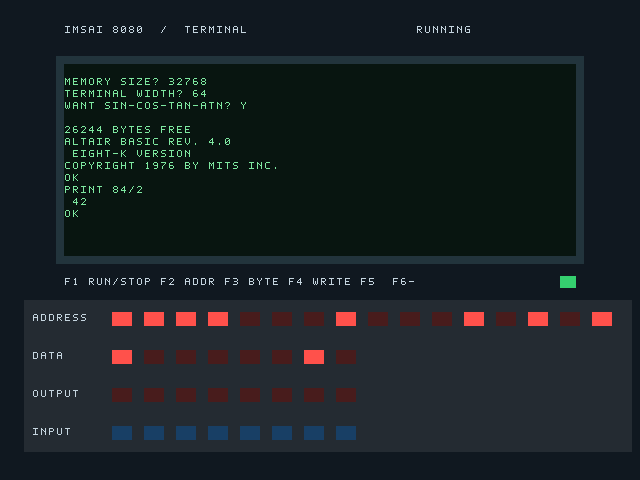
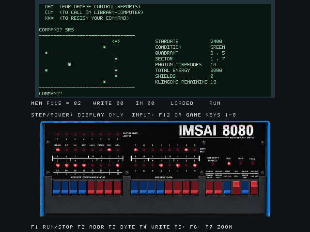
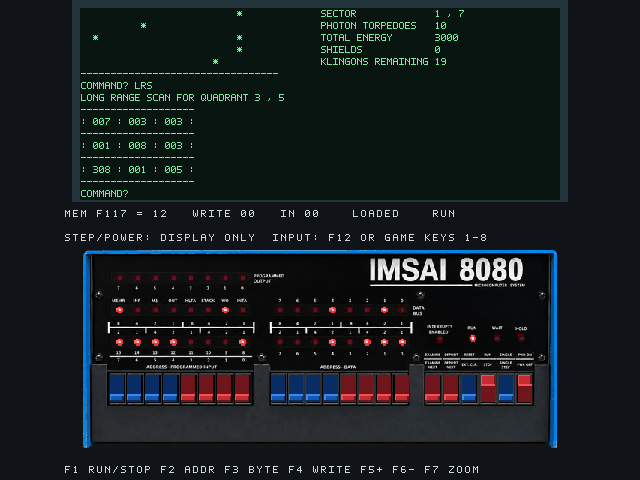

| Taste | Funktion |
|---|---|
| F1 | Programm anhalten (STOP) oder weiterlaufen lassen (RUN). |
| F2 | Speicheradresse auswählen und ihren Inhalt ansehen. |
| F3 | Neuen Wert zum Schreiben vorbereiten - ändert noch nichts. |
| F4 | Den vorbereiteten Wert an die ausgewählte Adresse schreiben. |
| F5 | Nächste Speicheradresse ansehen. |
| F6 | Vorherige Speicheradresse ansehen. |
| F7 | Zwischen gemeinsamer Terminal-/Frontplattenansicht und großer Frontplatte wechseln. |
F2 bis F6 funktionieren im STOP-Zustand. Nur F4 verändert den Speicher. F7 wechselt nur die Ansicht: Ein laufendes Programm läuft weiter, ein angehaltenes bleibt angehalten.
# IMSAI 8080 for MiSTer -- Prototype **Front-panel update / 23 October 2026 / MiSTer by Toby** An experimental IMSAI 8080 FPGA core with a green terminal, a virtual LED front panel and historical programs. The idea came from Toby; development was assisted by OpenAI Codex. See [CREDITS.md](CREDITS.md) for component authors. ## What's new - Terminal (80 columns x 16 rows) and the smaller front panel share one screen. - **F7** enlarges the front panel; press F7 again to return. Program execution and terminal contents continue across view changes. - Original-style artwork with live output, CPU-status, address and data lamps. - Existing RUN/STOP, memory controls and LED-game inputs are retained.   The panel artwork is an AI-generated interpretation of a reference photograph, not a scan of an original faceplate. The screenshots show the actual FPGA output. STEP and POWER are displayed but have no implemented action. ## Download and installation Download **IMSAI8080-MiSTer-Update-20261023.zip** from [Releases](https://github.com/toby01019/IMSAI8080-MiSTer/releases). The same [dated core](IMSAI8080_20261023.rbf) and seven `IMSAI8080 Update - ...mgl` launch entries are available directly in this repository; [build sources](Sources.zip) are included. This is an update for an existing installation. It does **not** bundle historical program runtimes. The launch entries reuse your existing `/games/IMSAI8080` files. 1. Extract the ZIP on your computer. 2. Copy the contents of `SD/_Computer` into `/_Computer` on the MiSTer SD card. 3. Keep `IMSAI8080_20261001.rbf` and your old launch entries as a fallback. 4. Start an **IMSAI8080 Update - ...** entry from the Computer menu. The new core is `IMSAI8080_20261023.rbf`. Its launch entries use a separate `IMSAI8080_Update20261023` configuration. Do not replace other cores or games. The Amiga core is unrelated and is not changed by this update. ## Controls F1 RUN/STOP; F2 address; F3 byte; F4 write while stopped; F5/F6 next/previous address; **F7 combined/enlarged view**; F12 MiSTer menu. In Kill the Lights, keys 1-8 control the input switches. See [USER_GUIDE.md](USER_GUIDE.md). ## Hardware checks On Toby's MiSTer: both views and return switching, terminal echo, STOP/DEPOSIT (`MEM 8000 = A5`), BASIC (`PRINT 84/2` -> `42`), LED-game input, and Star Trek short- and long-range scans passed. Terminal contents were preserved across F7. This does not establish that a complete Star Trek mission has been tested.    Quartus 25.1 build: 10,444/41,910 ALMs (25%), 12,207 registers, 292/553 RAM blocks (53%). Reported constrained paths pass: minimum setup slack 0.451 ns and hold slack 0.246 ns. Quartus still reports incompletely constrained timing requirements. Simulation regressions and full video-raster checks passed. ## Limits and credits This remains a development prototype, not a complete historical CP-A circuit replica. STEP, POWER and starting execution at an examined address are not implemented. Keyboard punctuation and Ctrl-C support remain incomplete. Individual component licenses and attribution remain in [Sources.zip](Sources.zip) and [licensing notes](SOURCES_AND_LICENSING.md). Historical programs are separate works; this update does not redistribute Microsoft/MITS BASIC runtime images. Suggestions, ideas and test reports are welcome. # User guide -- 23 October 2026 The default screen combines the 80 x 16 terminal and smaller panel. F7 enlarges the panel and returns without resetting the program. STEP and POWER are display-only. ## Starting a program The installed entries appear in MiSTer's Computer menu: | Entry | Purpose | | --- | --- | | IMSAI8080 Update - Terminal | Terminal demonstration with keyboard echo | | IMSAI8080 Update - Switch test | Simple input/output test | | IMSAI8080 Update - Complement test | Complementary output test | | IMSAI8080 Update - Kill the Lights | Historical LED game | | IMSAI8080 Update - Tiny BASIC | Palo Alto Tiny BASIC V3.0 | | IMSAI8080 Update - BASIC 4.0 | Altair 8K BASIC 4.0 | | IMSAI8080 Update - Super Star Trek | BASIC 4.0 with automatically loaded Star Trek | For Star Trek, wait for the listing to finish and COMMAND? to appear. Restarting its menu entry starts a new game. ## Front-panel controls | Key | Function | | --- | --- | | F1 | Toggle RUN/STOP; wait for STOP before modifying memory | | F2 | EXAMINE: enter a hexadecimal address | | F3 | Enter a hexadecimal byte to write | | F4 | DEPOSIT: write the prepared byte at the selected address while stopped | | F5 | Examine the next address | | F6 | Examine the previous address | | Enter or Escape | Finish address or byte entry | | F7 | Toggle combined terminal/panel and enlarged front panel | | F12 | Open the MiSTer menu | Addresses use four hexadecimal digits; bytes use two, entered with 0-9 and A-F. New digits shift older digits left; extra digits displace the oldest. The highlighted field identifies active input. When stopped, ADDRESS identifies the selected location, DATA and MEM show its contents, and WRITE shows the prepared value. During RUN, address and data display the CPU bus. Input goes to the terminal while running and to the panel field while stopped. EXAMINE does not change the program counter. RUN resumes the suspended program. These are monitor-style controls rather than a complete replica of the historical CP-A circuitry. ## First memory test Use the Terminal demonstration: 1. Press F1 until STOP appears. 2. Press F2 and enter 8000. 3. Press F3 and enter A5. 4. Press F4; MEM should show 8000 = A5. 5. Press F5, then F6; A5 should still be present. 6. Press F1 to resume; terminal input should work again. 8000 is unused by this demonstration. It is not generally safe to modify that address in other programs; Star Trek's loader uses upper memory for its script. ## Input limitations The keyboard supports uppercase letters, digits, space, Enter, backspace and some punctuation. Shift combinations for plus, asterisk and quotation marks, and Ctrl-C, remain incomplete. The font can display symbols that the keyboard cannot yet enter. F1 pauses the CPU; it does not replace BASIC's Ctrl-C break function. Restarting an entry reloads the image and discards unsaved changes. 





